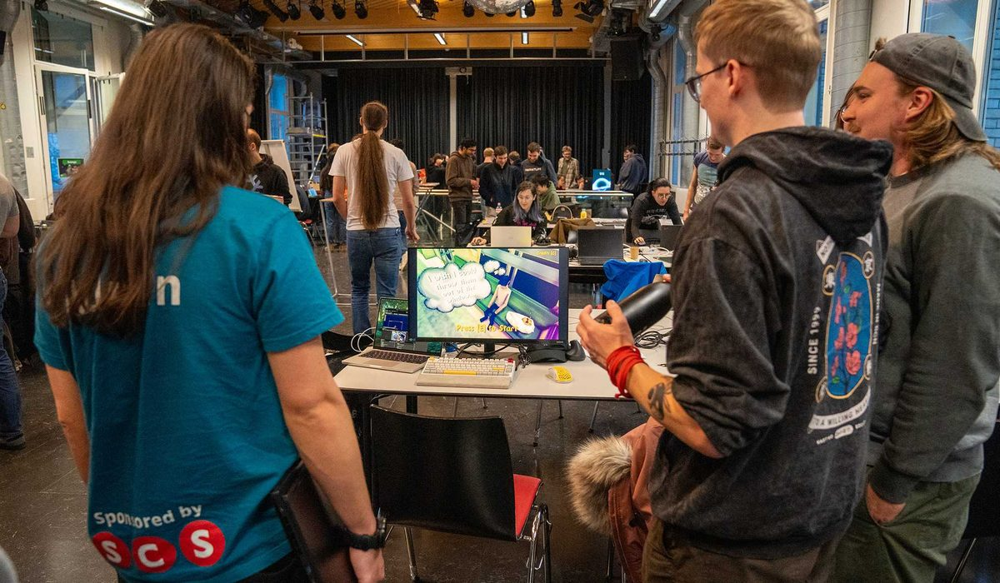
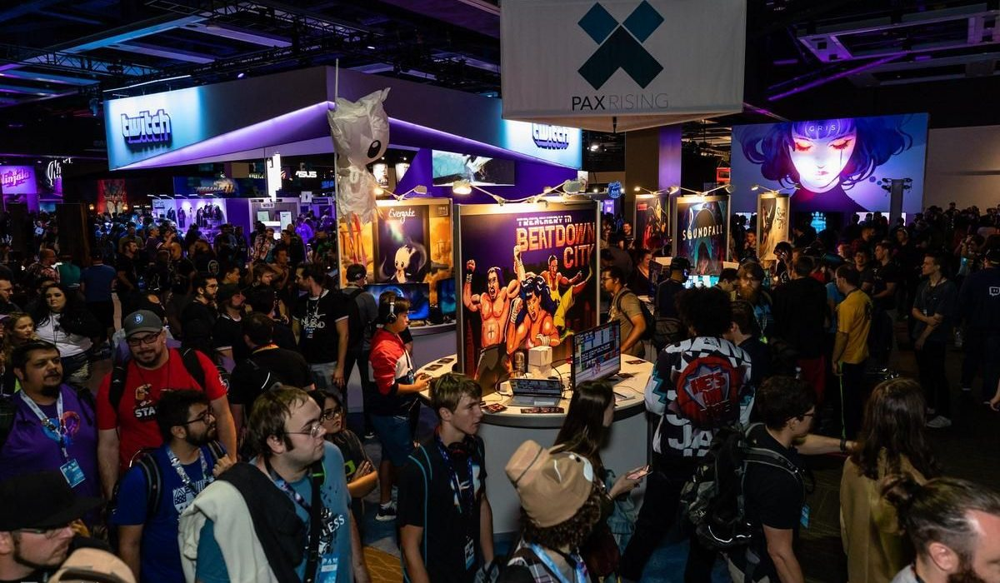

En bref
Pour travailler dans un grand studio de jeu vidéo comme Ubisoft, il faut choisir un métier précis dès le lycée, viser une formation de niveau bac+5 reconnue dans ce métier, multiplier les projets en équipe et décrocher un stage ou une alternance en studio avant le diplôme. Le portfolio et le réseau comptent autant que le diplôme.
- Les grands studios recrutent par métier, programmeur, game designer, artiste, animateur, sound designer, producer
- La majorité des offres pour jeunes diplômés demandent un niveau bac+5 ou une expérience équivalente
- Un stage ou une alternance en studio est le premier moyen d’être recruté à la fin des études
- Le portfolio en ligne, avec des jeux terminés, est lu avant le CV
Sommaire de ce guide
Étape 1, choisir un métier avant une école
« Travailler dans le jeu vidéo » ne veut rien dire pour un recruteur. Un grand studio recrute un programmeur gameplay, un level designer, un animateur, jamais un passionné de jeux en général. Le premier travail est donc de choisir, même provisoirement, un métier.
| Métier | Note /10 | Formation conseillée | Ce que regarde le studio | Salaire débutant | Concurrence |
|---|---|---|---|---|---|
| Programmeur gameplayNotre choix | 8,6 | Cursus ingénieur ou bac+5 programmation | Code sur projets terminés | Environ 35 000 à 38 000 € | Modérée |
| Game designer | 7,8 | Bac+5 game design | Jeux prototypés et documentés | Environ 30 000 € | Très forte |
| Game artist | 7,6 | Bac+5 game art | Portfolio d’illustration et de 3D | Environ 28 000 à 30 000 € | Très forte |
| Animateur 3D | 7,5 | Bac+5 animation | Bande démo | Environ 28 000 à 30 000 € | Forte |
| Sound designer | 7,4 | Formation son pour le jeu | Démo sonore intégrée en jeu | Environ 28 000 à 32 000 € | Modérée |
| Producer | 7,3 | Bac+5 production ou école de commerce | Gestion de projet en équipe | Environ 32 000 € | Modérée |
Notes Comparécoles de novembre 2026, pondérées par la facilité d’accès à un premier poste. Salaires bruts annuels indicatifs pour un premier poste en France.
Étape 2, viser une formation reconnue de niveau bac+5
Les grands studios filtrent souvent les candidatures de jeunes diplômés sur le niveau d’études. Un titre RNCP de niveau 7, un diplôme d’ingénieur ou un master pèsent plus qu’un certificat d’école. Vérifiez le titre au Répertoire national des certifications professionnelles avant de vous inscrire.
- Pour la programmation, un cursus ingénieur ou un bac+5 en informatique appliquée au jeu
- Pour le design et l’art, une école spécialisée qui fait travailler les étudiants en équipe pluridisciplinaire
- Pour la production, un bac+5 en production de jeu vidéo ou une école de commerce avec spécialisation

Étapes 3 et 4, finir des jeux et entrer en studio
Un recruteur préfère un petit jeu terminé à trois prototypes abandonnés. Les game jams, les projets d’école en équipe et les jeux publiés sur une plateforme en ligne montrent que vous savez aller au bout.
| Expérience | Ce qu’elle prouve | Quand la faire |
|---|---|---|
| Game jam | Livrer un jeu en 48 heures en équipe | Dès le lycée |
| Projet d’école en équipe | Travailler avec d’autres métiers | Chaque année d’études |
| Stage en studio | Connaître une vraie production | Dès la 3e année |
| Alternance | Être déjà intégré à une équipe | En fin de cursus |
Parcours type observé chez les jeunes diplômés recrutés par les studios français.
Le premier contrat se signe très souvent dans le studio du dernier stage. Choisir son école, c’est aussi choisir ses portes d’entrée.
Étapes 5 et 6, portfolio et réseau
Le portfolio en ligne est lu avant le CV. Il montre trois à cinq projets maximum, chacun avec votre rôle précis, les outils utilisés et ce que vous en avez appris. Le réseau se construit dans les salons professionnels, les festivals et auprès des anciens de votre école.

Comment adapter le parcours à votre profil
Si vous êtes fort en mathématiques
La programmation est le métier le plus recherché et le mieux payé en début de carrière. Visez un cursus ingénieur.
Si vous dessinez depuis toujours
Game art ou animation, avec une première année artistique pour solidifier le portfolio.
Si vous aimez organiser et décider
La production, souvent accessible après un premier métier ou un double cursus.
Notre verdict
Pour travailler dans un grand studio comme Ubisoft, il faut un métier précis, une formation de niveau bac+5 reconnue, des jeux terminés et un stage en studio avant le diplôme. Le portfolio et le réseau font la différence entre deux candidats au même diplôme.
Si votre priorité est d’être recruté vite, choisissez la programmation. Si votre priorité est la création, préparez-vous à une concurrence forte et à un portfolio irréprochable.
Questions fréquentes
Quel parcours pour travailler chez Ubisoft ?
Choisir un métier dès le lycée, suivre une formation de niveau bac+5 reconnue dans ce métier, réaliser des projets en équipe et faire un stage ou une alternance en studio avant le diplôme.
Quelles études pour travailler dans le jeu vidéo ?
Un bac+5 dans le métier visé, programmation, game design, game art, animation, son ou production, de préférence avec un titre RNCP de niveau 7 ou un diplôme d’ingénieur.
Les écoles de jeu vidéo sont-elles sur Parcoursup ?
Rarement. La plupart recrutent hors Parcoursup sur entretien et portfolio, seules quelques prépas intégrées et formations publiques passent par Parcoursup.
Quel est le métier du jeu vidéo le plus recherché ?
La programmation, en particulier gameplay et moteur. C’est aussi le métier le mieux payé en début de carrière, autour de 35 000 à 38 000 € bruts par an.
Peut-on travailler dans le jeu vidéo sans école ?
C’est possible en programmation avec un portfolio exceptionnel, beaucoup plus rare pour les métiers artistiques. Les grands studios recrutent très majoritairement des diplômés.
Notre méthode
Ce comparatif repose sur des données publiques, vérifiables une par une.
- Les frais de scolarité sont relevés sur les pages tarifs des écoles, pour l’année 2027-2028 quand elle est publiée
- Les diplômes sont vérifiés au Répertoire national des certifications professionnelles et auprès de la CTI
- Les taux d’insertion sont ceux que les écoles publient, avec les promotions concernées
- Les classements cités sont ceux de GAMEducation, du Figaro Étudiant, de The Rookies et d’Animation Career Review
- Les avis d’étudiants et de diplômés proviennent des forums d’orientation et des plateformes d’avis vérifiés